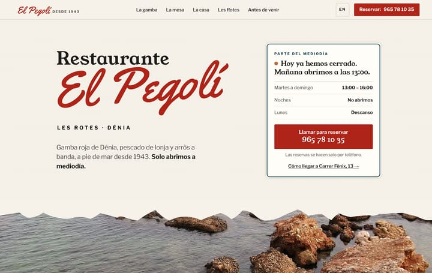
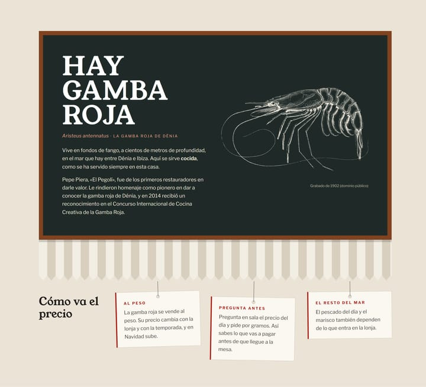
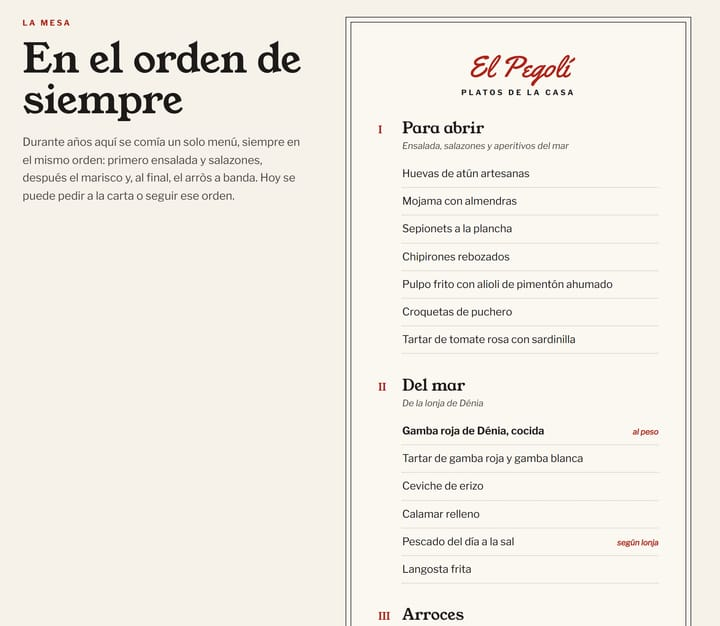
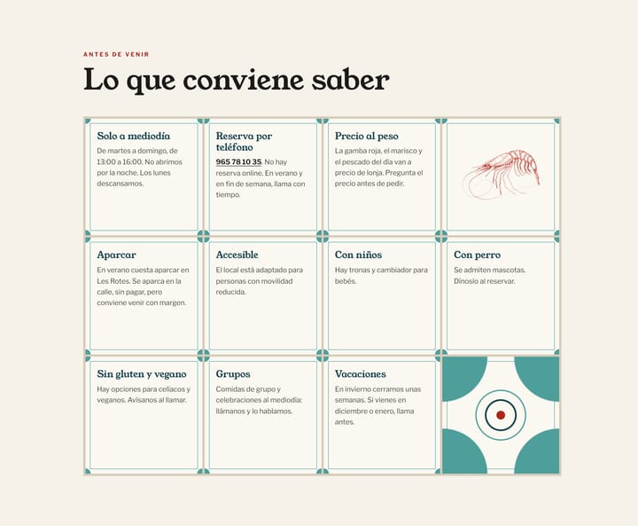
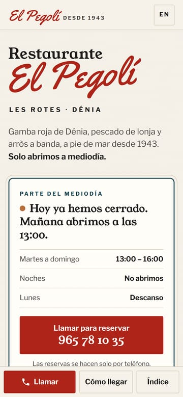

El Pegolí
Una casa de comidas marinera de 1943 cuya web decía cosas que ya no eran verdad.
Estudio de rediseño independiente, sin relación comercial con el restaurante. La marca y sus contenidos pertenecen a sus propietarios.
- Negocio
- Restaurante marinero en Les Rotes, Dénia
- Acción principal
- Llamar para reservar (no hay reserva online)
- Qué incluye
- Estudio del negocio, concepto, web en español e inglés
- Año
- 2026

El punto de partida
El Pegolí abrió en 1943 como un baret en la costa de roca de Les Rotes. Hoy lo llevan la tercera y la cuarta generación de la familia y es restaurante recomendado de la Guía Repsol.
Su web, en cambio, era un blog gratuito que se había quedado atrás: anunciaba cenas de verano que ya no sirve, daba fechas de vacaciones distintas según la página y unas coordenadas que no caen en Dénia.
En un restaurante que solo abre a mediodía y solo reserva por teléfono, esos datos son justo los que deciden si alguien llama.
Lo que encontré investigando
- Un rumor de cierre. Algunos resúmenes automáticos de buscadores afirmaban que había cerrado a finales de 2023. Era falso: su ficha de Google Maps seguía activa, con reseñas de hacía tres semanas respondidas por la casa.Google Maps, Tripadvisor e Instagram, septiembre de 2026.
- Un horario que se contradecía. Instagram dice «no abrimos por la noche»; la web antigua seguía anunciando cenas de jueves a sábado.Perfil de Instagram del restaurante y web anterior.
- El precio, en boca de todos. La gamba roja se vende al peso y su precio cambia con la lonja. Las reseñas hablan de ello a menudo: conviene explicarlo antes de que llegue la cuenta.Reseñas de Tripadvisor y Google.
- Las mismas dudas, una y otra vez. Aparcar en verano, si pueden ir niños o perros, si hay opciones sin gluten.Guía Repsol y datos de usuarios en Google Maps.
- Una historia que nadie contaba. Una caja de cerillas antigua con los nombres de los fundadores, un pionero de la gamba roja de Dénia y una colección de ánforas donada al Ayuntamiento.Prensa local (La Marina Plaza, Alicante Plaza) y archivo de coleccionismo.
La idea: rotulado en el muro
La imagen más propia de El Pegolí no es un plato. Es el muro encalado de su terraza, sobre las rocas, con el nombre pintado a mano: «Restaurante» en negro y «El Pegolí» en cursiva roja.
La web se construye como ese muro. Y todos los recursos gráficos salen de objetos reales de la casa: la barra a listones del baret de los años cuarenta, su cartel pintado, la balaustrada de la terraza, los azulejos marineros del comedor.
calrótulotintamartoscaazulejo
Tipografías: Yellowtail, cursiva de rotulista, solo para la marca; Young Serif, como letra pintada con plantilla, para titulares; Libre Franklin, de la cartelería de la época, para leer.
Decisiones, una a una

El parte del mediodía
Una placa calcula con la hora de Madrid si hoy abren, a qué hora y cuál es el teléfono. Responde la primera duda y desmiente el rumor de cierre sin tener que mencionarlo.
El rótulo del muro
«Restaurante» en romana negra y «El Pegolí» en cursiva roja, igual que está pintado en la fachada de la terraza.
Llamar, sin rodeos
No hay reserva online y no se simula una. La acción es llamar, y el número se ve entero y grande.
El muro acaba en la roca
Un borde irregular da paso a la costa de Les Rotes, como pasa de verdad bajo la terraza. Foto con licencia libre y crédito visible.

Una pizarra, no un banner
Recrea el cartel pintado «Hay cerveza y aperitivos» que colgaba sobre la barra del baret en una foto de los años cuarenta.
Un grabado de 1902
En lugar de la típica foto de gamba sobre hielo, un grabado científico de dominio público, entintado en tiza.
La barra a listones
El frontal de madera del baret original, dibujado en SVG: pesa casi nada y se ve nítido en cualquier pantalla.
Cómo va el precio
Al peso, según lonja, y el consejo de preguntar antes. Explica sin inventar cifras que cambian cada día.

En el orden de siempre
Durante años allí se comía un solo menú: salazones, marisco y arroz. La carta se ordena igual y lo cuenta.
Una hoja de papel
Estrecha y centrada, como la carta que te dan en la mesa. Sin cuadrícula de tarjetas con fotos de platos que no son suyos.
Sin precios inventados
La gamba va «al peso» y el pescado «según lonja». Lo que cambia cada día no se publica como fijo.

Cada azulejo, una duda real
Salen de las reseñas y de las fichas del restaurante, no de una lista genérica de preguntas frecuentes.
La verdad sobre aparcar
En verano cuesta. La web lo dice y explica cómo hacerlo, en vez de esconderlo.
Azulejo marinero
El filete turquesa de su vajilla y los cuadros de azulejos del comedor, convertidos en sistema gráfico.
En el móvil

Una barra con lo esencial
Llamar, Cómo llegar e Índice, fijos abajo, donde llega el pulgar. Es lo que se busca con el móvil en la mano camino de la playa.
El horario, lo primero
La placa del mediodía sube justo debajo del nombre. En escritorio está al lado; en el móvil manda.
Un menú que se lee
El índice se abre a pantalla completa, con letra grande y sin submenús.
También en inglés
Versión completa en inglés para el visitante extranjero, con la misma estructura.
Lo que no me he inventado
- Ningún precio: lo que depende de la lonja se dice así.
- Ninguna foto de platos. No hay fotografías del restaurante con permiso de uso; las del paisaje de Les Rotes tienen licencia libre y crédito visible.
- La lista de platos sale de reseñas y prensa de 2013 a 2026 y queda marcada para que la casa la valide.
- Las fechas de vacaciones y el horario de invierno quedan pendientes de confirmar con el restaurante.
Las capturas incluyen la foto «Les Rotes, Dénia, roques» de Joanbanjo (Wikimedia Commons, CC BY-SA 3.0) y el grabado de Aristeus antennatus de 1902 (dominio público).


¿Tu web también dice cosas que ya no son verdad?
Cuéntame tu negocio. Empiezo por lo mismo que aquí: entender cómo funciona y qué necesitan saber tus clientes.
Cuéntame tu negocio